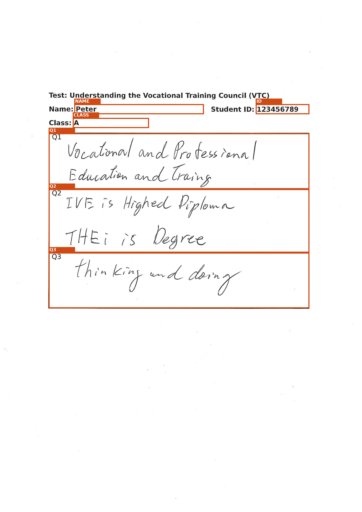

Designing an Agent Skill for Exam Grading: Architecture, Preflight, and Computer Vision Pipeline
Part 1 of 5 · MS MVP Technical Series · Agent Skills, Deterministic Preflight, Rubrics & Region Extraction

Introduction
Grading handwritten student examinations is one of the most time-consuming and high-stakes responsibilities in education. While multimodal large language models (LLMs) possess impressive visual recognition capabilities, deploying them directly in an academic grading workflow introduces severe risks: hallucinated criteria, inconsistent scoring rubrics, unpredictable token consumption, and accidental exposure of student data. The solution is not to surrender the process to autonomous AI loops, but to construct a deterministic software harness where AI operates under strict boundary conditions.
In this 5-part Microsoft MVP technical series, we dissect the architecture of Azure Handwriting Grader Skills—an open-source, enterprise-grade system designed to grade handwritten exams with human-in-the-loop oversight on Azure OpenAI. The hardest engineering problem in real-world AI is rarely the model call itself; it is where the AI stops and deterministic software takes over.
In Part 1, we focus on the architectural foundation:
- The Four-Layer Architecture: Decoupling teacher intent in a conversational assistant, reusable Agent Skill policy in skills/handwriting-grading/SKILL.md, deterministic Python command-line tooling, and Microsoft Agent Framework workflow orchestration.
- Fail-Fast Preflight Validation: Path jailing, student roster reconciliation, and strict multi-page scan verification before touching a model or spending a token.
- Two-Pass Rubric Engineering: Transforming unformatted teacher Word and Excel documents into structured JSON schemas with cross-criteria validation.
- Computer Vision Region Pipeline: Sub-millimeter bounding-box extraction, image resolution normalization, and coordinate anchoring for handwriting crops.

Figure 1. Four-layer architecture separating conversational skill policy, deterministic Python validation, Agent Framework orchestration, and Azure OpenAI inference.
1. Why an Agent Skill instead of a giant system prompt?
An Agent Skill is a portable, progressive-disclosure instruction package—not executable Python and not a security boundary. Its YAML frontmatter tells the host assistant when the skill applies:
name: handwriting-grading
description: >-
Guides preparation and human review of scanned handwriting grading with
Azure OpenAI Handwriting Grader. Use for exam configuration, input validation,
rubric and bounding-box review, grading review, reports, or safe planning
of student-score distribution. Does not provide a general OCR service or
authorize automated grading or email.
Instead of stuffing 1,500 lines of CLI flags and edge-case rules into every chat turn, SKILL.md uses progressive disclosure:
1. Frontmatter: Lightweight trigger metadata loaded at startup.
2. State-oriented router: A table mapping workspace artifacts (exam.yaml, rubric/approval.json, regions/approval.json, grading/manifest.json) to the next valid action.
3. On-demand references/*.md: Deep guides (configuration.md, regions.md, grading.md, pricing.md, regrading.md, email.md) read only when the user reaches that stage.
This excerpt from SKILL.md defines how the assistant orients itself:
Establish whether the user is starting or resuming, what stage they need,
and which local paths they intend to use. Do not copy or overwrite data.
To register the skill in Copilot CLI, an operator adds the skills/ directory once (copilot skill add "/path/to/azure-handwriting-grader-skills/skills") and verifies with /skills list. Cloning the repository alone does not load skills/ automatically; the skill instructions also never replace Python's executable gates.
2. Stage 0 & 1: Answer sheets, path-jail preflight, and attendance
Before any scan is touched, the pipeline supports three deterministic preparation steps:
Optional printable answer sheets (answer-sheets)
When a teacher has a roster and a DOCX template before the exam, handwriting-grader answer-sheets --exam exam.yaml merges student metadata into personalized DOCX files (including Word text boxes and hyperlinks) and converts them via local LibreOffice into numbered PDFs and a combined.pdf for printing. It runs against the full roster—independent of attendance—and leaves pagination verification to the teacher.
Path-jail and structural preflight (preflight)
handwriting-grader preflight --exam example/example.yaml is strictly read-only and creates zero files. cli.check_exam() resolves every relative path from exam.yaml's parent directory (config_dir) rather than the shell's current working directory, then enforces:
- Path containment: output_dir must not contain any input file (preventing accidental self-overwrite or cleanup deletion).
- Roster integrity: Opens the Excel sheet with openpyxl, preserves leading zeroes on ID strings, and rejects missing/duplicate IDs or missing NAME/CLASS columns.
- Page-count parity: Reads the scanned PDF with pypdf and checks P = S × N:
if roster_count and pdf_count is not None and pages and pdf_count != roster_count * pages:
errors.append("PDF page count does not equal roster count times pages_per_student")
summary.update(exam=name, students=roster_count, absent=absent_count,
pdf_pages=pdf_count, pages_per_student=pages)
return errors, summary
Observed output on the cleared four-student, two-page-per-script VTC example:

Figure 2. Real read-only preflight output. Four students × two pages = eight pages passes structural math, yet cannot prove page orientation.
Explicit attendance (prepare-attendance -> approve-attendance)
Absences are never inferred from missing PDF pages or blank OCR. If attendance is configured, the teacher supplies an explicit ID,STATUS CSV (present/absent for every roster ID), reviews attendance/review.xlsx, and runs approve-attendance --confirm-reviewed to bind the present-student set with SHA-256 hashes.
3. Why check-scans runs before region setup (4x FFT consensus)
A passing preflight cannot tell if Script 1 was fed into the scanner upside-down. If you draw bounding boxes on an upside-down Script 1, every downstream crop for the entire class will be wrong.
handwriting-grader check-scans --exam example/example.yaml solves this offline at zero AI cost. It renders pages via pure-Python pypdfium2, downsamples them 4x, and runs FFT phase correlation across the cohort to build a majority-consensus reference for each page position (0..N-1). Comparing every page against both upright and rotated (90°, 180°, 270°) consensus templates catches upside-down, sideways, blank, or swapped pages—even if Script 1 itself is the culprit.

Figure 3. Actual check-scans blocker captured on example/example.yaml: PDF pages 1, 3, and 5 match template page 2.
Because check-scans returned a non-zero exit code, SKILL.md enforces an explicit stop rule: report the exact 1-based PDF page numbers and script numbers so the teacher fixes the physical PDF manually—never silently flip or reorder pages in code.

Figure 4. Actual page 1 rendered from example/VTC Test.pdf (150 DPI publication export) showing NAME, ID, CLASS, and Q1–Q3.
4. Rubric ingestion: deterministic XLSX vs. structured DOCX extraction
Before regions can be suggested or grading can run, the system needs an approved rubric (output/rubric/rubric.xlsx). SKILL.md routes by source format:
- Structured XLSX (import-rubric): Validates the Marking Scheme sheet locally (zero AI cost), rejecting formula cells, non-positive marks, and duplicate normalized question_key() IDs.
- Unstructured DOCX (extract-rubric --confirm-cost): Converts the DOCX to Markdown via mammoth and calls Azure OpenAI with a Pydantic ExtractedRubric schema and rubric.PROMPT:
Extract the marking scheme from the document. Return every gradable
question or sub-question as its own separate entry with its exact label,
question text/context, marking criteria, and individual available marks.
Whenever a numbered question contains separately marked sub-parts, sub-items,
or fill-in-the-blank items (each having its own answer space or mark allocation),
split each sub-part into its own entry using its combined label rather than
collapsing multiple sub-parts into one parent entry. Include any general grading
guidance separately. Do not invent missing information.
class RubricQuestion(BaseModel):
question_number: StrictStr
question_text: StrictStr
marking_scheme: StrictStr
marks: float
class ExtractedRubric(BaseModel):
general_grading_guide: StrictStr = ""
questions: list[RubricQuestion]
response = client.generate_content(
model=model,
contents=[PROMPT, content],
config=GenerationConfig(**rubric_config),
)
Python then rejects missing text, duplicate normalized IDs, metadata labels (NAME/ID/CLASS) used as questions, and non-finite marks, appending general_grading_guide to each question's criteria. Optionally, verify-rubric --confirm-cost uses Azure Responses web_search (deliberately uncached) to produce verification.xlsx and verification.docx with cited sources for human fact-checking. Neither extraction nor verification approves the rubric—that requires approve-rubric --confirm-reviewed.

Figure 5. Saved rubric workbook excerpt: five ten-mark questions totaling 50 marks.
5. Region extraction, localhost review UI, and 4-quadrant FFT alignment
A multimodal LLM cannot grade handwriting that never entered the crop. As SKILL.md makes clear, AI region suggestions are strictly optional—a local manual path is always available:
Local manual region drawing remains available
without any paid suggestion. Every page still needs human review and approval.

Figure 6. End-to-end region extraction pipeline: pure-Python pypdfium2 rendering, optional 0..1000 AI proposals, token-hardened browser review, 4-quadrant FFT alignment, and Pillow blank filtering.
Pure-Python 200 DPI determinism (prepare-regions)
Historically, PDF-to-image pipelines relied on pdftoppm (Poppler), creating OS-specific installation friction across Windows, macOS, and Linux and subtle pixel-rounding differences. prepare-regions uses pure-Python pypdfium2 at 200 DPI (scale = 200 / 72.0), rendering Script 1's pages into regions/images/{page}.jpg and recording exact (width, height) dimensions (1654 × 2338 in our example) and SHA-256 digests in regions/manifest.json. Later, Microsoft Agent Framework's ValidateApproval Executor verifies these approved region boxes before any grading call runs.
Rubric-bound region extraction (suggest-regions)
If the teacher opts into AI region proposals (suggest-regions --confirm-cost), Python refuses to run until rubric/approval.json exists. suggestions.build_prompt() dynamically injects the exact approved question_number list and short question summaries into suggestions.PROMPT (and hashes question_ids into the opt-in cache key):
Identify answer and metadata regions on this scanned exam page.
For metadata fields (NAME, ID, CLASS):
- The bounding box MUST enclose the handwritten/input value area (the blank line, box, or write-in space where the student writes), NOT the printed label text (such as "Name:", "Student ID:", or "Class:").
- For NAME: Allocate generous horizontal width across the entire designated answer line/blank to accommodate variable student name lengths.
- For ID and CLASS: Enclose the complete write-in area or box designated for the student's ID and class.
- Use exact labels "NAME", "ID", and "CLASS".
For question answer areas:
- Expected question IDs from the marking rubric: {question_ids}.
{question_details}- Return ONE bounding box enclosing the complete student answer area/table for each expected question ID that appears on this page.
- Use ONLY the exact question ID labels listed above. Do NOT invent, rename, or subdivide labels beyond that list.
- Do not include printed question instructions or titles in the answer box.
Coordinates must use a normalized 0-to-1000 scale: x and y are the top-left corner, and width and height are the box dimensions. Ensure all boxes lie entirely inside the page. Return an empty list if no regions can be identified.
Python converts normalized 0..1000 boxes to integer pixels at the edges (right - left rather than rounding width independently), retains NAME/ID/CLASS only on template page 0, and rejects negative/out-of-bounds boxes before writing ai_suggestions.json:
left = round(box.x * page["width"] / 1000)
top = round(box.y * page["height"] / 1000)
right = round((box.x + box.width) * page["width"] / 1000)
bottom = round((box.y + box.height) * page["height"] / 1000)

Figure 7. Saved 1654 × 2338 template page with approved boxes (NAME, ID, CLASS, Q1–Q3).
Token-hardened localhost review UI (review-regions)
handwriting-grader review-regions --exam exam.yaml starts a zero-dependency local HTTP server (editor.py) bound to 127.0.0.1 with a random bearer token in the URL fragment (#TOKEN), strict Origin header validation, auto-loaded AI suggestions, zoom/pan, keyboard nudging, and a live missing-box banner verifying ID on page 0 plus every rubric question before "Approve all regions" writes regions/approval.json.
Coordinate scale discipline & 4-quadrant FFT page alignment (alignment.py)
In our VTC example, John's Q3 box in 1654 × 2338 template space is (222, 1153, 1191, 254):
{
"x": 222,
"y": 1153,
"width": 1191,
"height": 254,
"label": "Q3"
}
When overlaying boxes onto a 150-DPI publication export (1241 × 1754), you must scale X and Y independently:
sx = display_width / original_width
sy = display_height / original_height
display_box = (
round(x * sx),
round(y * sy),
round((x + width) * sx),
round((y + height) * sy),
)

Figure 8. John's saved grading page (script index 2) with the Q3 boundary highlighted.

Figure 9. Reconstructed Q3 crop (1191 × 254 px) showing a second line ("hand-on") that the historical transcription missed.
To compensate for physical scanner drift during grade (and retry-grading --align-images, which re-renders from the original PDF into grading/alignment-history/recovery-*/), alignment.py downsamples 2x, thresholds ink (255 - pixel >= 35), applies a Hanning window to each quadrant, and computes normalized FFT cross-power phase correlation:
fa = np.fft.rfft2(ref_patch * win)
fb = np.fft.rfft2(cur_patch * win)
cross_power = fa * np.conj(fb)
cross_power /= np.maximum(np.abs(cross_power), 1e-8)
cc = np.fft.irfft2(cross_power, s=ref_patch.shape)
It fits a rigid transform (tx, ty, theta, bounded to ±150 px and ±5°) and rejects outliers—requiring at least three positively weighted quadrants to agree within 15.0 full-resolution pixels:
residuals = np.hypot(
dx - (tx - theta * py),
dy - (ty + theta * px),
)
if np.count_nonzero((weights > 0.0) & (residuals <= 15.0)) < 3:
return 0.0, 0.0, 0.0
Finally, before calling Azure OpenAI, local_filter.py runs an inset Pillow dark-pixel check (ink_threshold=160, max_ink_ratio=0.0015) to assign 0 locally to clearly blank answers, and grading.crop_image() sharpens non-blank crops in memory:
def crop_image(path, box):
with Image.open(path) as image:
x, y = box["x"], box["y"]
crop = image.crop((x, y, x + box["width"], y + box["height"]))
crop = ImageEnhance.Sharpness(crop).enhance(3)
buffer = io.BytesIO()
crop.save(buffer, format="PNG")
return buffer.getvalue()
Next: Multi-Role Azure OpenAI & Microsoft Agent Framework: Orchestration Without Surrendering Control.
Implementation references: preflight and CLI, rubric extraction, region suggestions, and FFT alignment.